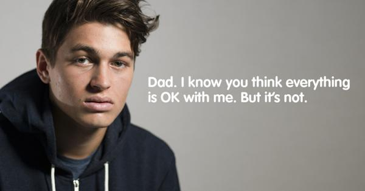
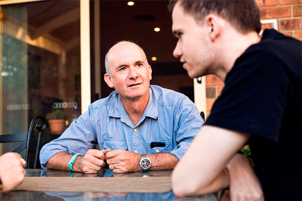

How to start the conversation
A lot of things go unsaid between young men and their dads. Especially when it comes to mental health issues. The headspace Fathers campaign aims to open up the conversation between fathers and sons and raise awareness about the support services available.
How can dads help?
Fathers can play a vital role in identifying the early signs of mental illness and helping their sons get the support they need, but many men are unsure how to start the conversation or what services are available. headspace is here to help.
A large part of supporting young people through any of their mental health issues is to simply understand what they are going through and open the lines of communication. The following information is designed to help fathers and other family members understand and respond to the mental health needs of the young people in their lives.
Mental health and young people
What is mental health?
Mental health empowers us to work and study to our full potential, cope with day-to-day stress, be involved in our community, and live our lives in a free and satisfying way. A young person with good mental health has sound emotional and social wellbeing and the capacity to cope with change and challenges.
What can trigger mental health difficulties for young people?
Like physical health, a person’s mental health can be exposed to challenges. There is no single explanation for why some young people experience difficulties with their mental health. Instead, it seems that a number of overlapping personal and environmental circumstances may increase the likelihood of a young person experiencing mental health difficulties. These circumstances can include:
- Relationship break up
- School or exam related pressures
- Drug and alcohol use and experimentation
- Bullying experiences at school/work
- Pressure and influences from social media (affecting personal image)
- Exploring gender identity
- Traumatic events e.g. natural disaster, serious accident, a physical or sexual assault or losing someone close to you
- Biological factors e.g. a family history of mental health problems
A young person might experience one or more of these at the same time.

Warning signs
What are the warning signs that a young person might be experiencing mental health difficulties?
As a parent, it can often be hard to know the difference between normal behaviour, such as occasional moodiness and irritability, and an emerging mental health problem. Feeling down, tense, angry, anxious or moody are all normal emotions for young people, but when these feelings persist for long periods of time (or if they begin to interfere with daily life) they may be part of broader mental health difficulties.
There are some warning signs that suggest a young person might be experiencing mental health difficulties. Keep an eye out for changes that are distinct and enduring (at least a few weeks), such as:
- Resisting involvement in activities they would normally enjoy
- Experiencing changes in appetite or sleeping patterns
- Being easily irritated or angry for no reason
- Finding their performance at school, TAFE, university or work is not as good as it should be or as it once was
- Involving themselves in risky behaviour they would usually avoid, such as taking drugs or drinking too much alcohol
- Having difficulties with concentration or motivation
- Seeming unusually stressed/worried or feeling down or crying for no apparent reason
- Expressing negative, distressing, bizarre or unusual thoughts.
Tips for talking to your son
What can I do to encourage your young person to talk about their mental health?
It’s important that young people feel comfortable and supported to talk about their mental health. Here are some things you can do to encourage this:
- Keep communication open, show empathy, and listen.
- Be available without being intrusive
- Spend time with the young person - you might be surprised what doing one activity together each week can do
- Take an interest in the young person’s activities and encourage them to talk about what’s happening in their life
- Take the young person’s feelings seriously
- Encourage and support positive friendships (this doesn’t mean being critical of relationships you do not view as positive)
- Encourage exercise, healthy eating, regular sleep, and doing things the person enjoys – this helps mental as well physical health
- Let the young person know that you love them. They may not always admit it but this is likely to be very important to them
How should I talk to a young person if I am worried about their mental health and safety?
Raising sensitive issues with young people can be challenging. Some points parents may need to consider include:
- Often young people are worried about their parents being upset, anxious, overwhelmed, shocked, angry, blaming, etc
- If a young person can see that their parent might be able to respond calmly and listen they are more likely to begin a conversation
- Think about what might help the conversation. For example, does the young person find it easier to talk while driving or going for a walk? Would the young person find it easier out of the house with no interruptions? or to have someone else there for support?
Let them know that you are concernedHere are some tips for talking with a young person if you are worried about their mental health and safety:
- Talk openly and honestly with the young person
- Acknowledge that opening up about personal thoughts and feelings can be hard and sometimes scary
- Tell the young person that talking about a problem can help
- Reassure the young person that you will be there for them, and ask what they need from you (they might not know what they need)
- Join the young person in finding information and an appropriate service, such as headspace,
- Offer to support them in attending a chosen service
- Ask direct questions if you are concerned about suicide. For example, “Have you ever thought about death?” or “Have you ever thought about ending your life?” (if you are not sure how you might feel hearing ‘yes’ to this question seek professional support to help you manage the conversation)
Some young people might deny there’s anything wrong and/or refuse help. You could suggest other people the young person could talk to, for example, a trusted adult or a GP. You can also suggest eheadspace. It’s okay to raise your concerns again and again - letting the young person know you’ll do this can be reassuring.
What can I say to start a conversation with a young person about their mental health?
There is no perfect way to start a conversation about mental health with a young person. Using ‘I’ statements is a good way to talk about your thoughts and feelings. Below are some examples of things you could say or ask a young person to start a conversation.
Keep in mind that some young people can find it challenging to talk about their mental health - listen carefully and don’t judge.
Example conversation starters:
Sometimes it can be helpful, to start a conversation with a general and open question such as:
- How is [e.g. school / sport] going?
- How are you getting on with [e.g. your friends / your siblings]?
- How are you feeling about [e.g. studying / exams]?
You might start also try more specific questions or comments such as:
- I've noticed that you seem to have a lot on your mind lately. I’m happy to talk or listen and see if I can help.
- Its ok if you don’t want to talk to me, you could talk to [trusted/known adult]. I will keep letting you know I love you and am concerned.
- It seems like you [haven’t been yourself lately / have been up and down], how are things?
- You seem [anxious / sad], what is happening for you? We can work it out together.
How you start conversations with young person will depend on their age and understanding, and the language you use should feel natural. If a young person opens up about their mental health it is important that the first thing you say lets the young person know you’re glad/relieved that they are talking to you.
Remember to look after yourself!
When you are look after yourself you have greater patience and can offer a more considered approach to helping a young person. Families and friends supporting young people should remember their own needs and know where to get information and support for themselves.
Some ways you can look after your own health and wellbeing include:
- There is no such thing as a PERFECT parent – go easy on yourself.
- Asking for help from family and friends.
- Making time every day to do something you enjoy.
- Seeking information and support for yourself. Your GP, or counsellor is a good person to talk to about this.
What services are available?
headspace can provide face-to-face, online and telephone information and support to young people and their family and friends through:
headspace centres across Australia provide face-to-face information, support and services to young people aged 12 to 25 years, and their families and friends. Each headspace centre delivers support to young people in four areas: mental health, physical health, work and study support, and alcohol and other drug services. headspace centres are designed to create an environment where young people feel comfortable. All services are free or low cost and confidential.headspace centres
A range of workers are available at centres, including GPs, psychiatrists, mental health workers (psychologists, social workers, occupational therapists, nurses) and other workers (youth workers, alcohol and other drug workers, vocational workers) who have specific expertise working with young people.
There is a national network of over 80 headspace centres across metropolitan, regional and rural areas of Australia. Find your nearest headspace centre here.
eheadspace
eheadspace is a national online and telephone support service staffed by a range of experienced youth and mental health professionals. eheadspace supports young people who aren't able to access a headspace centre or who would prefer to get help for their problems via online chat, email or phone. eheadspace can also assist families and friends in supporting a young person they are worried about.
Find out more and access eheadspace here.
Information and resources
Take a look around the headspace website, we have a wealth of information and resources on a range of topics for young people, parents, family and frien
.